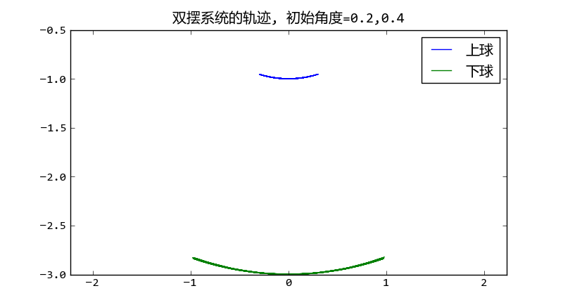
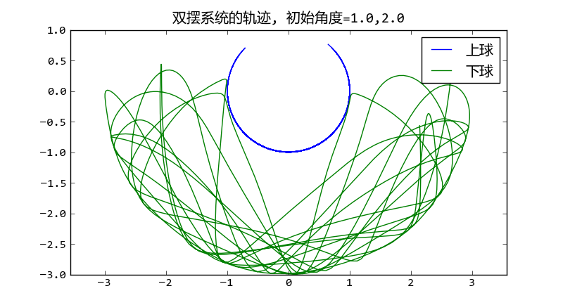

相关文档： 单摆和双摆模拟
 文件名: double_pendulum_odeint.py
# -*- coding: utf-8 -*-
from math import sin,cos
import numpy as np
from scipy.integrate import odeint
g = 9.8
class DoublePendulum(object):
def __init__(self, m1, m2, l1, l2):
self.m1, self.m2, self.l1, self.l2 = m1, m2, l1, l2
self.init_status = np.array([0.0,0.0,0.0,0.0])
def equations(self, w, t):
"""
微分方程公式
"""
m1, m2, l1, l2 = self.m1, self.m2, self.l1, self.l2
th1, th2, v1, v2 = w
dth1 = v1
dth2 = v2
#eq of th1
a = l1*l1*(m1+m2) # dv1 parameter
b = l1*m2*l2*cos(th1-th2) # dv2 paramter
c = l1*(m2*l2*sin(th1-th2)*dth2*dth2 + (m1+m2)*g*sin(th1))
#eq of th2
d = m2*l2*l1*cos(th1-th2) # dv1 parameter
e = m2*l2*l2 # dv2 parameter
f = m2*l2*(-l1*sin(th1-th2)*dth1*dth1 + g*sin(th2))
dv1, dv2 = np.linalg.solve([[a,b],[d,e]], [-c,-f])
return np.array([dth1, dth2, dv1, dv2])
def double_pendulum_odeint(pendulum, ts, te, tstep):
"""
对双摆系统的微分方程组进行数值求解，返回两个小球的X-Y坐标
"""
t = np.arange(ts, te, tstep)
track = odeint(pendulum.equations, pendulum.init_status, t)
th1_array, th2_array = track[:,0], track[:, 1]
l1, l2 = pendulum.l1, pendulum.l2
x1 = l1*np.sin(th1_array)
y1 = -l1*np.cos(th1_array)
x2 = x1 + l2*np.sin(th2_array)
y2 = y1 - l2*np.cos(th2_array)
pendulum.init_status = track[-1,:].copy() #将最后的状态赋给pendulum
return [x1, y1, x2, y2]
if __name__ == "__main__":
import matplotlib.pyplot as pl
pendulum = DoublePendulum(1.0, 2.0, 1.0, 2.0)
th1, th2 = 1.0, 2.0
pendulum.init_status[:2] = th1, th2
x1, y1, x2, y2 = double_pendulum_odeint(pendulum, 0, 30, 0.02)
pl.plot(x1,y1, label = u"上球")
pl.plot(x2,y2, label = u"下球")
pl.title(u"双摆系统的轨迹, 初始角度=%s,%s" % (th1, th2))
pl.legend()
pl.axis("equal")
pl.show()
文件名: double_pendulum_animation.py
# -*- coding: utf-8 -*-
import matplotlib
matplotlib.use('WXAgg') # do this before importing pylab
import matplotlib.pyplot as pl
from double_pendulum_odeint import double_pendulum_odeint, DoublePendulum
fig = pl.figure(figsize=(4,4))
line1, = pl.plot([0,0], [0,0], "-o")
line2, = pl.plot([0,0], [0,0], "-o")
pl.axis("equal")
pl.xlim(-4,4)
pl.ylim(-4,2)
pendulum = DoublePendulum(1.0, 2.0, 1.0, 2.0)
pendulum.init_status[:] = 1.0, 2.0, 0, 0
x1, y1, x2, y2 = [],[],[],[]
idx = 0
def update_line(event):
global x1, x2, y1, y2, idx
if idx == len(x1):
x1, y1, x2, y2 = double_pendulum_odeint(pendulum, 0, 1, 0.05)
idx = 0
line1.set_xdata([0, x1[idx]])
line1.set_ydata([0, y1[idx]])
line2.set_xdata([x1[idx], x2[idx]])
line2.set_ydata([y1[idx], y2[idx]])
fig.canvas.draw()
idx += 1
import wx
id = wx.NewId()
actor = fig.canvas.manager.frame
timer = wx.Timer(actor, id=id)
timer.Start(1)
wx.EVT_TIMER(actor, id, update_line)
pl.show()